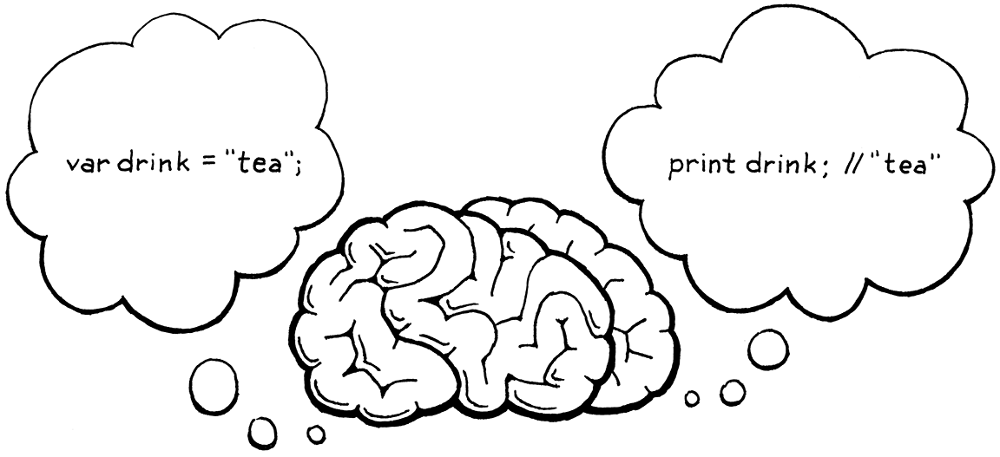

语句和状态
我的一生，我的心一直渴望着一种我无法说出的东西。--André Breton,Mad Love
到目前为止，我们使用的解释器感觉不像是在编写真正的语言，而更像是在计算器上点击按钮。“编程”对我来说意味着用小的部件构建一个系统。我们暂时无法完成，因为没有办法将名称绑定到某些数据或函数。如果没有引用片段的方法，就无法编写软件。
为了支持绑定，解释器需要内部状态。当在程序开头定义一个变量并在后边使用它时，解释器必须同时保留该变量的值。因此在本章中，我们将为解释器提供一个不仅可以处理，而且可以记忆的大脑。

状态和语句必须一块处理。由于根据定义，语句不会计算出一个值，因此它们需要做一些其他事情才能发挥作用。那东西叫做
副作用 (side effect) 。这可能意味着产生用户可见的输出或修改的某些状态，而这些状态可以在解释器的后边看到。后者使它们非常适合定义变量或其他命名实体。
您可以创建一种将变量声明视为既创建绑定又生成值的表达式的语言。我所知道的唯一能做到这一点的语言是 Tcl。Scheme 似乎是一个竞争者，但请注意，在对
let表达式求值后，它绑定的变量会被遗忘。define语法不是表达式。
在本章中，我们将完成所有这些。我们将定义产生输出 (print) 和创建状态 (var) 的语句。将添加表达式来访问和分配给变量。最后，我们将添加块(block)和本地作用域(local scope)。一章要塞的东西很多，但我们会一口气搞定。
8.1 语句statements
首先用语句扩展 Lox 的语法。它们与表达式没有太大区别。我们从最简单的两种开始：
- 表达式语句 可以在需要语句的地方放置一个表达式。它们的存在是为了计算有副作用的表达式。你可能没有注意到它们，但你在C、 Java 和其他语言中一直在使用它们。任何时候您看到函数或方法调用后跟一个
;，您都在查看表达式语句。
Pascal是例外。它区分过程和函数。函数返回值，但过程不能。调用过程有语句形式，但函数只能在需要表达式的地方调用。Pascal 中没有表达式语句。
- print语句 计算表达式并将结果显示给用户。我承认将打印直接融入语言而不是将其作为库函数是很奇怪的。这样做是对这样一个事实的让步：我们一次构建这个解释器一章，并希望能够在它全部完成之前使用它。要使 print 成为一个库函数，必须等到拥有定义和调用函数的所有机制，然后才能看到任何副作用。
我会略带防御性地指出，BASIC 和 Python 有专门
新语法意味着新语法规则。在本章中，我们终于获得了解析整个 Lox 脚本的能力。由于 Lox 是一种命令式的动态类型语言，因此脚本的“顶层”只是一个语句列表。新规则是：
program → statement* EOF ;
statement → exprStmt
| printStmt ;
exprStmt → expression ";" ;
printStmt → "print" expression ";" ;
第一条规则是 now?program，它是语法的起点，代表一个完整的 Lox 脚本或 REPL 条目。程序是一个语句列表，后跟特殊的“文件结尾”标记。强制结束标记确保解析器消耗整个输入，并且不会在脚本末尾默默地忽略错误的未消耗标记。
目前，statement我们描述的两种陈述只有两种情况。我们将在本章后面和后面的章节中填写更多内容。下一步是将这种语法转化为我们可以存储在内存中的东西——语法树。
8.1.1 语句语法树
语法中没有允许同时使用表达式和语句的地方。例如，操作数+始终是表达式，而不是语句。循环体while始终是一个语句。
由于这两种语法是不相交的，因此不需要它们都继承自单个基类。将表达式和语句拆分为单独的类层次结构使 Java 编译器能够帮助我们发现愚蠢的错误，例如将语句传递给需要表达式的 Java 方法。
这意味着一个新的语句基类。正如我们的前辈在之前所做的那样，我们将使用神秘的名称“Stmt”。凭着远见，我设计了我们的小 AST 元编程脚本来预测这一点。这就是为什么我们将“Expr”作为参数传递给defineAst().现在我们添加另一个调用来定义 Stmt 及其子类。
算不上先见之明：在将本书分成章节之前，我已经编写了本书的所有代码。
"Unary : Token operator, Expr right"
));
defineAst(outputDir, "Stmt", Arrays.asList(
"Expression : Expr expression",
"Print : Expr expression"
));
}
// tool/GenerateAst.java, in main()
运行 AST 生成器脚本并查看生成的“Stmt.java”文件，其中包含表达式和print语句所需的语法树类。不要忘记将文件添加到您的 IDE 项目或 makefile 或其他文件中。
8.1.2 解析语句
parse()解析并返回单个表达式的解析器方法是零时的处理方式，用于启动和运行后边步骤。现在我们的语法有了正确的起始规则，program，我们就可以parse()开始真正的工作了。
List<Stmt> parse() {
List<Stmt> statements = new ArrayList<>();
while (!isAtEnd()) {
statements.add(statement());
}
return statements;
}
// lox/Parser.java, method parse(), replace 7 lines
我们在此处用于捕获
ParseError异常的代码怎么样？当我们添加对其他语句类型的支持时，我们将尽快实施更好的解析错误处理。
这会解析一系列语句，尽可能多地找到它，直到到达输入的末尾。这是program规则到递归下降风格的非常直接的翻译。我们必须向 Java祈祷，因为我们现在正在使用 ArrayList。
package com.craftinginterpreters.lox;
import java.util.ArrayList;
import java.util.List;
// lox/Parser.java
程序是语句列表，我们使用此方法解析其中一个语句：
private Stmt statement() {
if (match(PRINT)) return printStatement();
return expressionStatement();
}
// lox/Parser.java, add after expression()
有点简单，但稍后会用更多的语句类型填充它。我们通过查看当前token来确定匹配哪个特定语句规则。print token意味着它显然是一个声明print。
如果下一个token看起来不像任何已知类型的语句，我们假设它一定是表达式语句。这是解析语句时典型的最终失败案例，因为很难从第一个标记主动识别表达式。
每个语句类型都有自己的方法。第一个是print：
private Stmt printStatement() {
Expr value = expression();
consume(SEMICOLON, "Expect ';' after value.");
return new Stmt.Print(value);
}
// lox/Parser.java, add after statement()
由于我们已经匹配并使用了print token本身，因此不需要在这里执行此操作。我们解析后续表达式，使用终止分号，并生成语法树。
如果我们没有匹配print语句，我们必须有以下之一：
private Stmt expressionStatement() {
Expr expr = expression();
consume(SEMICOLON, "Expect ';' after expression.");
return new Stmt.Expression(expr);
}
// lox/Parser.java, add after printStatement()
与前面的方法类似，解析一个表达式后跟着一个分号。并将该 Expr 包装在正确类型的 Stmt 中并返回它。
8.1.3 执行语句
我们正在微观世界中浏览前几章，从前端开始。我们的解析器现在可以生成语句语法树，所以下一步也是最后一步是解释它们。与在表达式中一样，使用访问者模式，但有一个新的访问者接口 Stmt.Visitor 来实现，因为语句有自己的基类。
我们将其添加到解释器实现的接口列表中。
class Interpreter implements Expr.Visitor<Object>,
Stmt.Visitor<Void> {
void interpret(Expr expression) {
// lox/Interpreter.java, replace 1 line
Java 不允许您使用小写的“void”作为泛型类型参数，原因不明，与类型擦除和堆栈有关。相反，有一个单独的“Void”类型专门用于此用途。有点像“boxed void”，比如“Integer”代表“int”。
与表达式不同，语句不产生任何值，因此访问方法的返回类型是 Void，而不是 Object。现在有两种语句类型，每种类型都需要一个访问方法。最简单的是表达式语句。
@Override
public Void visitExpressionStmt(Stmt.Expression stmt) {
evaluate(stmt.expression);
return null;
}
// lox/Interpreter.java, add after evaluate()
我们使用现有evaluate()方法评估内部表达式并丢弃该值。然后我们返回null。Java 要求满足特殊的大写 Void 返回类型。很奇怪，但是只能这样？
刚好，我们将Java表达式语句结果作为参数并传给
evaluate()并不返回结果。
该print语句的访问方法没有太大区别。
@Override
public Void visitPrintStmt(Stmt.Print stmt) {
Object value = evaluate(stmt.expression);
System.out.println(stringify(value));
return null;
}
// lox/Interpreter.java, add after visitExpressionStmt()
在丢弃表达式的值之前，我们使用上一章介绍的方法stringify()将其转换为字符串，然后将其输出。
解释器现在可以访问语句了，但是还需要做一些工作才能将语句提供给它。首先，修改 Interpreter 类中的旧interpret()方法以接受语句列表——换句话说，一个程序。
void interpret(List<Stmt> statements) {
try {
for (Stmt statement : statements) {
execute(statement);
}
} catch (RuntimeError error) {
Lox.runtimeError(error);
}
}
// lox/Interpreter.java, method interpret(), replace 8 lines
这取代了采用单个表达式的旧代码。新代码依赖于这个工具函数：
private void execute(Stmt stmt) {
stmt.accept(this);
}
// lox/Interpreter.java, add after evaluate()
这是类似于用于表达式的evaluate()方法。因为现在需要处理列表，所以需要导入 Java 一些包。
package com.craftinginterpreters.lox;
import java.util.List;
class Interpreter implements Expr.Visitor<Object>,
// lox/Interpreter.java
Lox 主类仍在尝试解析单个表达式并将其传递给解释器。像下边这样修该解析行：
Parser parser = new Parser(tokens);
List<Stmt> statements = parser.parse();
// Stop if there was a syntax error.
//lox/Lox.java, in run(), replace 1 line
然后用这个替换对解释器的调用：
if (hadError) return;
interpreter.interpret(statements);
}
// lox/Lox.java, in run(), replace 1 line
基本上只是试探新的语法。好的，启动解释器并试一试。此时，可以在文本文件中草拟一个 Lox 小程序以作为脚本运行。就像是：
print "one";
print true;
print 2 + 1;
它几乎看起来像一个真正的程序！请注意，REPL 现在也要求您输入完整的语句而不是简单的表达式。不要忘记你的分号。
8.2 全局变量
现在有了语句，可以开始处理状态了。在深入了解词法作用域的所有复杂性之前，将从最简单的变量类型开始——全局变量。这需要两个新结构。
- 变量声明语句将一个新变量带入世界。
java
var beverage = "espresso" ;
这将创建一个新绑定，将名称（此处为“beverage 饮料”）与值（此处为字符串"espresso"）相关联。
- 完成后，变量表达式将访问该绑定。当标识符“beverage”用作表达式时，它会查找绑定到该名称的值并返回它。
java
print beverage; // "espresso".
稍后，我们将添加赋值和块作用域，但这已经足够了。
全局状态名声不好。当然，大量的全局状态——尤其是可变状态——使得维护大型程序变得困难。减少使用量是很好的软件工程。
但是，当您正在拼凑一种简单的编程语言，或者，甚至是学习您的第一个语言时，全局变量的简单性会有所帮助。我的第一门语言是 BASIC，虽然我最终长大了，但很高兴在我可以让计算机做有趣的事情之前我不必围绕范围规则来思考。
8.2.1 变量语法
和以前一样，我们将从头到尾完成实现，从语法开始。变量声明是语句，但它不同于其他语句，我们将把语句语法一分为二来处理。那是因为语法限制了允许使用某些类型的语句的位置。
控制流语句中的子句——想想if语句的 then 和 else 分支或 while循环体——每个都是一个语句。这些语句不允许在其中含有声明变量的语句。这样是可行的：
if (monday) print "Ugh, already?";
但这样不行：
if (monday) var beverage = "espresso";
理论上我们可以允许后者，但它令人困惑。beverage该变量的范围是什么 ？在if语句后是否仍然存在？如果是这样，它在monday以外值是多少？除monday以外变量是否存在？
像这样的代码很奇怪，所以 C、Java 和朋友们都不允许这样做。就好像语句有两个级别的“优先级”。一些允许语句的地方——比如块内或顶层允许任何类型的语句，包括声明。其他地方只允许“更高”优先级语句，但不能包含变量声明语句。
在这个类比中，块语句的作用有点像括号对表达式的作用。块本身处于“更高”的优先级别，可以在任何地方使用，比如在
if语句的子句中。但是它包含的语句可以是较低的优先级。您可以在块内声明变量和其他名称。大括号{} 让你从一个只允许一些语句的地方逃回完整的语句语法。
为了适应这种区别，我们为声明名称的语句类型添加了另一条规则。
program → declaration* EOF ;
declaration → varDecl
| statement ;
statement → exprStmt
| printStmt ;
变量声明语句符合新的declaration规则。现在，它只是变量，但以后它将包括函数和类。任何允许声明的地方也允许非声明语句，因此该declaration规则穿过statement.显然，您可以在脚本的顶层声明内容，以便program路由到新规则。
声明变量的规则如下：
varDecl → "var" IDENTIFIER ( "=" expression )? ";" ;
与大多数语句一样，它以前导关键字开头。在这种情况下，var。然后是要声明的变量名称的标识符标记，后跟可选的初始化表达式。最后，用分号结束。
为了访问一个变量，我们定义了一种新的基本表达式。
primary → "true" | "false" | "nil"
| NUMBER | STRING
| "(" expression ")"
| IDENTIFIER ;
IDENTIFIER子句匹配单个标识符token，该标识符被理解为被访问的变量的名称。
这些新的语法规则得到了它们对应的语法树。在 AST 生成器中，我们为变量声明添加了一个新的语句节点。
"Expression : Expr expression",
"Print : Expr expression",
"Var : Token name, Expr initializer" //<<new add
));
// tool/GenerateAst.java, in main(), add “,” to previous line
为新节点生成的代码在附录 II中。
它存储token 名称，以便知道它在声明什么，以及初始化表达式。（如果没有初始值设定项，则该字段为null.）
然后我们添加一个用于访问变量的表达式节点。
"Literal : Object value",
"Unary : Token operator, Expr right",
"Variable : Token name" //<<new add
));
// tool/GenerateAst.java, in main(), add “,” to previous line
它只是变量名token的包装器。就是这样。与往常一样，不要忘记运行 AST 生成器脚本，以便更新“Expr.java”和“Stmt.java”文件。
为新节点生成的代码在附录 II中。
8.2.2 解析变量
在解析变量语句之前，需要移动一些代码来为declaration语法中的新规则腾出空间。程序的顶层现在是一个声明(declaration)列表，因此解析器的入口点方法发生了变化。
List<Stmt> parse() {
List<Stmt> statements = new ArrayList<>();
while (!isAtEnd()) {
statements.add(declaration());
}
return statements;
}
// lox/Parser.java, in parse(), replace 1 line
这调用了这个新方法：
private Stmt declaration() {
try {
if (match(VAR)) return varDeclaration();
return statement();
} catch (ParseError error) {
synchronize();
return null;
}
}
// lox/Parser.java, add after expression()
OK，您还记得我们将基础架构部署到位以进行错误恢复的那一章吗？我们终于准备好接通它了。
此declaration()方法是我们在解析块或脚本中的一系列语句时重复调用的方法，因此当解析器进入恐慌模式时，它是同步的正确位置。此方法的整个主体都包含在一个 try 块中，以捕获解析器开始错误恢复时抛出的异常。这让它回到尝试解析下一个语句或声明的开头。
真正的解析发生在 try 块中。首先，它通过查找前导var关键字来查看我们是否处于变量声明中。如果不是，它会落入现有statement()的解析print和表达式语句的方法。
还记得statement()如果没有其他语句匹配时如何尝试解析表达式语句吗？如果expression()它无法解析当前标记处的表达式，则报告语法错误？如果未解析有效的声明或语句，该调用链可确保我们报告错误。
当解析器匹配一个var标记时，它执行：
private Stmt varDeclaration() {
Token name = consume(IDENTIFIER, "Expect variable name.");
Expr initializer = null;
if (match(EQUAL)) {
initializer = expression();
}
consume(SEMICOLON, "Expect ';' after variable declaration.");
return new Stmt.Var(name, initializer);
}
// lox/Parser.java, add after printStatement()
一如既往，递归下降代码遵循语法规则。解析器已经匹配了var token，因此接下来它需要并使用变量名称的标识符token。
然后，如果它看到一个=标记，它就知道有一个初始化表达式并解析它。否则，它初始化为null。最后，它在语句末尾使用所需的分号。所有这些都包含在 Stmt.Var 语法树节点中，我们很时髦。
解析变量表达式甚至更容易。在primary()中，我们寻找标识符token。
return new Expr.Literal(previous().literal);
}
if (match(IDENTIFIER)) {
return new Expr.Variable(previous());
}
if (match(LEFT_PAREN)) {
// lox/Parser.java, in primary()
这为我们提供了一个用于声明和使用变量的工作前端。剩下的就是将它输入解释器。在开始之前，需要讨论变量在内存中的位置。
8.3 环境
将变量与值关联绑定到一起需要存储在某个地方。自从 Lisp 的人发明了括号，这个数据结构就被称为环境。

我喜欢从字面上想象环境，就像一个森林仙境，变量和值在其中嬉戏。
你可以把它想象成一个映射，其中键是变量名，值是变量的值。事实上，这就是将如何在 Java 中实现它。可以将该映射和管理它的代码直接塞入 Interpreter 中，但由于它形成了一个很好描述的独立概念，我们将它单独放到一个类中。
Java 称它们为maps或hashmaps。其他语言称它们为哈希表、字典（Python 和 C#）、哈希（Ruby 和 Perl）、?表(Lua) 或关联数组(PHP)。很久以前，它们被称为散点表。
开始一个新文件并添加：
package com.craftinginterpreters.lox;
import java.util.HashMap;
import java.util.Map;
class Environment {
private final Map<String, Object> values = new HashMap<>();
}
// lox/Environment.java, create new file
那里有一个 Java Map 来存储绑定变量。它使用字符串作为键，而不是token。token表示源文本中特定位置的代码单元，但是在查找变量时，所有具有相同名称的标识符标记都应该引用相同的变量（暂时忽略范围）。使用原始字符串确保所有这些标记都引用相同的键。
我们需要支持两个操作。首先，变量定义将一个新名称绑定到一个值。
void define(String name, Object value) {
values.put(name, value);
}
// lox/Environment.java, in class Environment
不完全是脑部手术，但我们做出了一个有趣的语义选择。当我们将键添加到Map时，不会检查它是否已经存在。这意味着该程序有效：
var a = "before";
print a; // "before".
var a = "after";
print a; // "after".
变量语句不只是定义一个新的变量，它也可以用来重新定义一个现有的变量。我们可以选择将其设为错误。用户可能不打算重新定义现有变量。（如果他们确实有意这样做，他们可能会使用赋值，而不是var.）。将重新定义定义为错误将有助于他们找到该错误。
但是，这样做与 REPL 的交互效果很差。在 REPL 会话的中间，不必在脑海中跟踪您已经定义了哪些变量是件好事。我们可以允许在 REPL 中重新定义，但不允许在脚本中重新定义，但是用户将不得不学习两套规则，并且从一种形式复制粘贴到另一种形式的代码可能无法正常工作。
我关于变量和作用域的规则是，“当有疑问时，做 Scheme 做的事”。Scheme 的人可能比我们花更多的时间思考变量作用域——Scheme的主要目标之一是向世界介绍词法作用域——所以如果你追随他们的脚步就很难出错。
Scheme 允许在顶层重新定义变量。
所以，为了保持两种模式的一致性，我们将允许它——至少对于全局变量。一旦变量存在，我们就需要一种方法来查找它。
class Environment {
private final Map<String, Object> values = new HashMap<>();
Object get(Token name) {
if (values.containsKey(name.lexeme)) {
return values.get(name.lexeme);
}
throw new RuntimeError(name,
"Undefined variable '" + name.lexeme + "'.");
}
void define(String name, Object value) {
// lox/Environment.java, in class Environment
这在语义上更有趣一点。如果找到变量，它只返回绑定到它的值。但如果不是呢？同样，我们有一个选择：
-
使其成为语法错误。
-
使其成为运行时错误。
-
允许它并返回一些默认值，例如
nil.
Lox 相当宽松，但最后一个选项对我来说有点太宽容了。让它成为语法错误——编译时错误——似乎是一个明智的选择。使用未定义的变量是一个错误，越早发现错误越好。
问题是使用变量与引用它不同。如果代码块包含在函数中，您可以在代码块中引用变量而无需立即对其求值。如果我们将在声明变量之前提及变量作为静态错误，那么定义递归函数就会变得更加困难。
我们可以通过在检查函数体之前声明函数自己的名称来适应单一递归——一个调用自身的函数。但这对相互调用的相互递归过程没有帮助。考虑：
fun isOdd(n) {
if (n == 0) return false;
return isEven(n - 1);
}
fun isEven(n) {
if (n == 0) return true;
return isOdd(n - 1);
}
诚然，这可能不是判断数字是偶数还是奇数的最有效方法（更不用说如果将非整数或负数传递给它们会发生的坏事）。原谅我吧。
当我们查看isOdd()函数体时，函数isEven()并未定义。如果交换这两个函数的顺序，那么在我们查看isEven()函数体时isOdd()没有定义。`
某些静态类型语言（如 Java 和 C#）通过指定程序的顶层不是一系列命令式语句来解决此问题。相反，一个程序是一组同时产生的声明。该实现在查看任何函数的主体之前声明了所有名称。
C 和 Pascal 等较早的语言不是这样工作的。相反，它们会强制您添加显式前向声明以在名称完全定义之前对其进行声明。那是对当时有限的计算能力的让步。他们希望能够一次性通过文本编译源文件，因此那些编译器无法在处理函数体之前先收集所有声明。
由于将其设为静态错误会使递归声明变得非常困难，因此我们将错误推迟到运行时。只要您不评估引用，就可以在定义变量之前引用它。这使得偶数和奇数的程序可以工作，但你会在以下位置遇到运行时错误：
print a;
var a = "too late!";
对于表达式求值代码中的类型错误，我们通过抛出异常来报告运行时错误。异常包含变量的token，因此我们可以告诉用户他们在代码中的什么地方搞砸了。
8.3.1 解释全局变量
Interpreter 类拥有新环境类的一个实例。
class Interpreter implements Expr.Visitor<Object>,
Stmt.Visitor<Void> {
private Environment environment = new Environment();
void interpret(List<Stmt> statements) {
// lox/Interpreter.java, in class Interpreter
我们将其作为字段直接存储在解释器中，以便只要解释器仍在运行，变量就会保留在内存中。
我们有两个新的语法树，所以这是两个新的访问方法。第一个是声明语句。
@Override
public Void visitVarStmt(Stmt.Var stmt) {
Object value = null;
if (stmt.initializer != null) {
value = evaluate(stmt.initializer);
}
environment.define(stmt.name.lexeme, value);
return null;
}
// lox/Interpreter.java, add after visitPrintStmt()
如果变量有初始值设定项，我们就评估它。如果没有，我们还有另一个选择。我们本可以通过要求初始化程序使它成为解析器中的语法错误。不过，大多数语言都没有，所以在 Lox 中这样做感觉有点苛刻。
我们可以将其设为运行时错误。我们会让您定义一个未初始化的变量，但如果您在分配给它之前访问它，就会发生运行时错误。这不是一个坏主意，但大多数动态类型语言不会这样做。相反，我们将保持简单，并假设 Lox 将一个变量设置为nil如果它没有显式初始化。
var a;
print a; // "nil".
因此，如果没有初始化器，我们将值设置为null，这是 Loxnil值的 Java 表示。然后我们告诉环境将变量绑定到该值。
接下来，我们评估一个变量表达式。
@Override
public Object visitVariableExpr(Expr.Variable expr) {
return environment.get(expr.name);
}
// lox/Interpreter.java, add after visitUnaryExpr()
这只是转发到执行繁重工作以确保变量已定义的环境。这样，我们就有了基本的变量。试试这个：
var a = 1;
var b = 2;
print a + b;
我们还不能重用code，但我们可以开始构建重用data的程序。
8.4 赋值assignment
可以创建一种具有变量但不允许重新分配或改变它们的语言。Haskell就是一个例子。SML 仅支持可变引用和数组——不能重新分配变量。Rust 通过要求mut修饰符来启用赋值来引导您远离突变。
改变一个变量是一种副作用，顾名思义，一些语言专家认为副作用是肮脏的或不雅的。代码应该是产生价值的纯数学——结晶的、不变的值——就像神圣创造的行为。不是一些肮脏的自动机将数据块打成形状，一次发出一个命令式的咕哝声。
我感到很高兴的是，同一群以冷静的逻辑为荣的人也无法抗拒对他们的工作充满感情的术语：“纯粹”、“副作用”、“懒惰”、“执着”、“头等舱”，“高阶”。
Lox 并不那么简朴。Lox 是一种命令式语言，变异与生俱来。添加对赋值(assignment)的支持不需要太多工作。全局变量已经支持重新定义，所以现在大部分机制都已经号了。主要是，还缺少显式赋值符号。
8.4.1 赋值语法(Assignment syntax)
这个小=语法比看起来要复杂得多。与大多数 C 派生语言一样，赋值是一个表达式而不是语句。与在 C 中一样，它是最低优先级的表达式形式。这意味着规则位于expression和equality（下一个最低优先级表达式）之间。
在其他一些语言中，如 Pascal、Python 和 Go，赋值是一个语句。
expression → assignment ;
assignment → IDENTIFIER "=" assignment
| equality ;
这表示 assignment要么是一个标识符后跟一个 =和一个值的表达式，要么是一个equality（以及任何其他）表达式。稍后，assignment当我们给对象设置属性时，会变得更加复杂，例如：
instance.field = "value";
简单的部分是添加新的语法树节点。
defineAst(outputDir, "Expr", Arrays.asList(
"Assign : Token name, Expr value",
"Binary : Expr left, Token operator, Expr right",
// tool/GenerateAst.java, in main()
为新节点生成的代码在附录 II中。
它有一个用于分配给变量的token，以及一个用于新值的表达式。运行 AstGenerator 以获取新的 Expr.Assign 类后，替换解析器现有expression()方法内容以匹配更新后的规则。
private Expr expression() {
return assignment();
}
// lox/Parser.java, in expression(), replace 1 line
这就是它变得棘手的地方。向前看单个token的递归下降解析器无法看得足够远，无法判断它正在解析赋值，直到它通过左侧并偶然发现=.你可能想知道为什么需要这个=。因为,在完成对左操作数的解析之后,不能确定是否正在解析一个 +表达式(还是一个=表达式)。
不同之处在于赋值(assignment)的左侧不是计算结果的表达式。它是一种伪表达式，可以评估为可以赋值给的“事物”。考虑：
var a = "before";
a = "value";
在第二行，我们不评估(evaluate)a（这将返回字符串“before”）。为了弄清楚变量a指的是什么，所以得知道在哪里存储右侧表达式的值。这两个构造的经典术语是l-value和r-value。到目前为止，我们看到的所有产生值的表达式都是右值。左值“评估”到您可以分配到的存储位置。
事实上，名称来自赋值表达式：l值出现在赋值
=的左侧，r 值出现在右侧。
我们希望语法树反映左值(?l-value)不像普通表达式那样求值。这就是为什么 Expr.Assign 节点的左侧有一个Token ，而不是 Expr。问题是解析器没有遇到=号之前解析器不知道它正在解析一个左值.在复杂的左值中，这(=号)可能会在 许多token 之后出现。
makeList().head.next = node;
由于字段赋值的接收者可以是任何表达式，并且表达式可以是任意长度，因此可能需要无限数量的先行标记才能找到
=.
我们只有一个前瞻token，那么该怎么办？我们使用了一个小技巧，看起来像这样：
private Expr assignment() {
Expr expr = equality();
if (match(EQUAL)) {
Token equals = previous();
Expr value = assignment();
if (expr instanceof Expr.Variable) {
Token name = ((Expr.Variable)expr).name;
return new Expr.Assign(name, value);
}
error(equals, "Invalid assignment target.");
}
return expr;
}
// lox/Parser.java, add after expressionStatement()
解析赋值表达式的大部分代码看起来与其他二元运算符（如+.我们解析左侧，它可以是更高优先级的任何表达式。如果找到=，将解析右侧，然后将其全部包装在一个赋值表达式树节点中。
如果左侧不是有效的赋值目标，会报告一个错误，但不会抛出它，因为解析器没有处于需要进入恐慌模式并同步的混乱状态。
与二元运算符的一个细微差别是不会循环构建相同运算符的序列。由于赋值是右结合的，改为递归调用assignment()以解析右侧。
诀窍是在创建赋值表达式节点之前，查看左侧表达式并弄清楚它是哪种赋值目标。将右值表达式节点转换为左值表示。
这种转换之所以有效，是因为事实证明每个有效的赋值目标恰好也是作为普通表达式的有效语法。考虑一个复杂的字段分配，例如：
即使存在不是有效表达式的赋值目标，您仍然可以使用此技巧。定义覆盖语法，一种接受所有有效表达式和赋值目标语法的更宽松的语法。当您点击 时
=，如果左侧不在有效的赋值目标语法内，则报告错误。相反，如果您没有点击=，如果左侧不是有效表达式，则报告错误。
newPoint(x + 2, 0).y = 3;
该赋值的左侧也可以用作有效表达式。
newPoint(x + 2, 0).y;
第一个示例设置字段，第二个示例获取它。
这意味着可以将左侧作为表达式来解析，然后在事后生成将其转换为赋值目标的语法树。如果左侧表达式不是有效的 赋值目标，我们将因语法错误而失败。这确保我们报告这样的代码错误：
a + b = c;
回到解析章节，我说过在语法树中表示带括号的表达式，因为稍后会需要它们。这就是为什么。我们需要能够区分这些情况：
c a = 3; // OK. (a) = 3; // Error.
现在，唯一有效的赋值目标是一个简单的变量表达式，但我们稍后会添加字段。这个技巧的最终结果是一个赋值表达式树节点，它知道它要赋值给什么，并且有一个表达式子树用于赋值。所有这些都只有一个前瞻标记，没有回溯。
8.4.2 赋值语义
我们有一个新的语法树节点，因此解释器获得了一个新的访问方法。
@Override
public Object visitAssignExpr(Expr.Assign expr) {
Object value = evaluate(expr.value);
environment.assign(expr.name, value);
return value;
}
// lox/Interpreter.java, add after visitVarStmt()
出于显而易见的原因，它类似于变量声明。它评估右侧以获取值，然后将其存储在命名变量中。它不是define()在 Environment 上使用，而是调用这个新方法：
void assign(Token name, Object value) {
if (values.containsKey(name.lexeme)) {
values.put(name.lexeme, value);
return;
}
throw new RuntimeError(name,
"Undefined variable '" + name.lexeme + "'.");
}
// lox/Environment.java, add after get()
赋值和定义之间的主要区别在于赋值不允许创建新变量。就我们的实现而言，这意味着如果key不存在于环境的变量映射中，则会出现运行时错误。
与 Python 和 Ruby 不同，Lox 不进行隐式变量声明。
该visit()方法做的最后一件事是返回分配的值。那是因为赋值是一个可以嵌套在其他表达式中的表达式，如下所示：
var a = 1;
print a = 2; // "2".
解释器现在可以创建、读取和修改变量。它与早期的BASIC一样复杂。全局变量很简单，但是当任何两块代码可能不小心踩到彼此的状态时编写大型程序并不好玩。我们需要局部变量，这意味着是时候使用scope了。
也许比那好一点。与一些旧的 BASIC 不同，Lox 可以处理超过两个字符的变量名。
8.5 作用域 scope
作用域定义名称映射到特定实体的区域。多个作用域使相同的名称可以在不同的上下文中引用不同的事物。在我家，“Bob”通常指的是我。但也许在您所在的城镇，您认识一个不同的 Bob。相同的名字，意义不同是因为你说的地方不同。
词法作用域（或不太常见的静态作用域）是一种特定的作用域样式，是以程序本身的文本显示作用域的开始和结束位置。在 Lox 中，就像在大多数现代语言中一样，变量是词法范围的。当您看到一个使用某个变量的表达式时，您可以通过静态阅读代码来找出它引用的是哪个变量声明。
“Lexical”来自希腊语“lexikos”，意思是“与词有关 related to words”。当我们在编程语言中使用它时，它通常意味着您无需执行任何操作就可以从源代码本身弄清楚的事情。
词法范围随着 ALGOL 出现。早期的语言通常是动态范围的。当时的计算机科学家认为动态范围执行起来更快。今天，感谢早期的 Scheme 黑客，我们知道这不是真的。如果有的话，情况恰恰相反。
变量的动态范围存在于某些角落。Emacs Lisp 默认为变量的动态作用域。Clojure 中的
binding宏提供了它。JavaScript 中广泛不喜欢的with语句将对象的属性转换为动态范围的变量。
例如：
{
var a = "first";
print a; // "first".
}
{
var a = "second";
print a; // "second".
}
在这里，我们有两个块，每个块中都声明了一个变量a。你我只要看一下代码就可以知道，第一个语句中的print的是第一个a，而第二个语句指的a是第二个。

这与动态作用域相反，动态作用域在执行代码之前不知道名称指的是什么。Lox 没有动态范围的变量，但对象上的方法和字段是动态范围的。
class Saxophone {
play() {
print "Careless Whisper";
}
}
class GolfClub {
play() {
print "Fore!";
}
}
fun playIt(thing) {
thing.play();
}
playIt()调用thing.play()时，我们不知道会输出“Careless Whisper”还是“Fore!” , 这取决于您将 Saxophone 还是 GolfClub 传递给该函数，直到运行时才知道。
作用域(Scope)和环境(environments)是近亲。前者是理论概念，后者是实现它的机制。当我们的解释器通过代码工作时，影响范围的语法树节点将改变环境(environments)。在像 Lox 的 C-ish 语法中，范围由花括号块控制。（这就是为什么我们称它为block scope。）
{
var a = "in block";
}
print a; // Error! No more "a".
块的开头引入了一个新的本地作用域，并且该作用域在执行通过}结束时结束。块内声明的任何变量都会消失。
8.5.1 嵌套和遮蔽 Nesting and shadowing
实现块作用域的第一步可能是这样的：
-
当我们访问块内的每个语句时，跟踪声明的所有变量。
-
执行最后一条语句后，告诉环境删除所有这些变量。
这适用于前面的示例。但请记住，局部作用域的一个动机是封装——程序一个角落的代码块不应干扰其他块。看一下这个：
// How loud?
var volume = 11;
// Silence.
volume = 0;
// Calculate size of 3x4x5 cuboid.
{
var volume = 3 * 4 * 5;
print volume;
}
查看使用 的局部声明计算长方体体积的块volume。块退出后，解释器将删除全局volume变量。那是不对的。当退出块时，应该删除在块内声明的任何变量，但是如果在块外声明了一个同名变量，那就是一个不同的变量。它不应该被触动。
当局部变量与封闭范围内的变量同名时，它会遮蔽 shadows外部变量。块内的代码无法再看到它——它隐藏在内部块投射的“阴影”中——但它仍然存在。
当进入一个新的块作用域时，需要保留在外部作用域中定义的变量，以便在退出内部块时它们仍然存在。通过为每个只包含在该范围内定义的变量的块定义一个新环境来做到这一点。当退出块时，丢弃它的环境并恢复之前的环境。
我们还需要处理未隐藏的封闭变量。
var global = "outside";
{
var local = "inside";
print global + local;
}
在这里，global生活在外部全球环境中，且local在块的环境中定义。在该print声明中，这两个变量都在范围内。为了找到它们，解释器不仅必须搜索当前最内层的环境，还必须搜索任何封闭(enclosing)的环境。
通过将环境链接在一起来实现这一点。每个环境都有对直接封闭范围的环境的引用。当查找一个变量时，从最里面向外走那条链，直到找到变量。从内部作用域开始，我们如何使局部变量影响外部作用域。

当解释器运行时，环境形成一个对象的线性链表，但要考虑在整个执行过程中创建的全套环境。外部作用域可能嵌套有多个块，每个块都指向外部作用域，形成树状结构，尽管树中一次只存在一条路径。
它的无聊名称是父指针树，但我更喜欢令人回味的仙人掌堆栈。

在向语法添加块语法之前，将通过支持这种嵌套来增强我们的 Environment 类。首先，为每个环境提供对其封闭环境的引用。
class Environment {
final Environment enclosing;
private final Map<String, Object> values = new HashMap<>();
// lox/Environment.java, in class Environment
这个字段需要初始化，所以添加了几个构造函数。
Environment() {
enclosing = null;
}
Environment(Environment enclosing) {
this.enclosing = enclosing;
}
// lox/Environment.java, in class Environment
无参数构造函数用于全局范围的环境，它结束了链。另一个构造函数创建一个嵌套在给定外部范围内的新本地范围。
我们不必触及该define()方法——一个新变量总是在当前最内层的作用域中声明。但是变量查找和赋值与现有变量一起工作，它们需要遍历链才能找到它们。首先，查找：
return values.get(name.lexeme);
}
if (enclosing != null) return enclosing.get(name);
throw new RuntimeError(name,
"Undefined variable '" + name.lexeme + "'.");
// lox/Environment.java, in get()
如果在此环境中找不到该变量，我们只需尝试在enclosing中查找。这反过来递归地做同样的事情，所以这最终将遍历整个链。如果我们到达一个没有enclosing环境，但仍然没有找到变量，那么我们就会像以前一样放弃并报告错误。
分配的工作方式相同。
迭代遍历链可能更快，但我认为递归解决方案更漂亮。我们将在 clox 中更快地做一些事情。
values.put(name.lexeme, value);
return;
}
if (enclosing != null) {
enclosing.assign(name, value);
return;
}
throw new RuntimeError(name,
// lox/Environment.java, in assign()
同样，如果变量不在这个环境中，它会递归地检查外部变量。
8.5.2 块语法和语义
现在环境可以嵌套了，我们已经准备好向语言添加块。看语法：
statement → exprStmt
| printStmt
| block ;
block → "{" declaration* "}" ;
块是一系列（可能是空的）语句或声明，用花括号括起来。块本身就是一条语句，可以出现在任何允许语句的地方。语法树节点如下所示：
defineAst(outputDir, "Stmt", Arrays.asList(
"Block : List<Stmt> statements",
"Expression : Expr expression",
// tool/GenerateAst.java, in main()
为新节点生成的代码在附录 II中。
它包含块内的语句列表。解析很简单。与其他语句一样，我们通过其前导token检测块的开始——在本例中为{.
在statement()方法中，我们添加：
与往常一样，不要忘记运行“GenerateAst.java”。
if (match(PRINT)) return printStatement();
if (match(LEFT_BRACE)) return new Stmt.Block(block());
return expressionStatement();
// lox/Parser.java, in statement()
所有真正的工作都发生在这里：
private List<Stmt> block() {
List<Stmt> statements = new ArrayList<>();
while (!check(RIGHT_BRACE) && !isAtEnd()) {
statements.add(declaration());
}
consume(RIGHT_BRACE, "Expect '}' after block.");
return statements;
}
// lox/Parser.java, add after expressionStatement()
我们创建一个空列表，然后解析语句并将它们添加到列表中，直到我们到达块的末尾，以结束标记}。请注意，循环还对 进行显式检查isAtEnd()。我们必须小心避免无限循环，即使在解析无效代码时也是如此。如果用户忘记关闭}，解析器就不会卡住。
block()返回原始语句列表并将其留 在Stmt.Blockstatement()中以将列表包装起来看起来有点奇怪。我这样做是因为我们稍后会重用它block()来解析函数体，我们不希望将该函数体包装在 Stmt.Block 中。
这就是语法。对于语义，我们在 Interpreter 中添加另一个访问方法。
@Override
public Void visitBlockStmt(Stmt.Block stmt) {
executeBlock(stmt.statements, new Environment(environment));
return null;
}
// lox/Interpreter.java, add after execute()
要执行一个块，我们为块的范围创建一个新环境并将其传递给另一个方法：
void executeBlock(List<Stmt> statements,
Environment environment) {
Environment previous = this.environment;
try {
this.environment = environment;
for (Stmt statement : statements) {
execute(statement);
}
} finally {
this.environment = previous;
}
}
// lox/Interpreter.java, add after execute()
这个新方法在给定环境的上下文中执行一系列语句。到目前为止，Interpreter 中的environment字段始终指向相同的环境——全局环境。现在，该字段代表当前环境。这是对应于包含要执行的代码的最内层作用域的环境。
为了在给定范围内执行代码，此方法更新解释器的?environment字段，访问所有语句，然后恢复以前的值。作为 Java 中的一贯良好做法，它使用 finally 子句恢复以前的环境。这样即使抛出异常它也会恢复。
手动更改和恢复可变
environment字段感觉不雅。另一种经典方法是将环境作为参数显式传递给每个访问方法。要“改变”环境，您在向下递归树时传递一个不同的环境。您不必恢复旧的，因为新的存在于 Java 堆栈中，并且当解释器从块的访问方法返回时被隐式丢弃。我考虑过 jlox，但是向每个访问方法添加环境参数有点乏味和冗长。为了使本书更简单一些，我使用了可变字段。
令人惊讶的是，为了完全支持局部变量、嵌套和遮蔽，我们需要做的就是这些。继续尝试一下：
var a = "global a";
var b = "global b";
var c = "global c";
{
var a = "outer a";
var b = "outer b";
{
var a = "inner a";
print a;
print b;
print c;
}
print a;
print b;
print c;
}
print a;
print b;
print c;
我们的解释器现在可以记住事情了。我们正在逐渐接近类似于功能齐全的编程语言的东西。
挑战
-
REPL 不再支持输入单个表达式并自动打印其结果值。那是一个拖累。添加对 REPL 的支持，让用户可以输入语句和表达式。如果他们输入语句，则执行它。如果他们输入一个表达式，对其求值并显示结果值。
-
也许您希望 Lox 对变量初始化更明确一些。不要将变量隐式初始化为
nil，而是将访问尚未初始化或分配给的变量设为运行时错误，如：
```c // No initializers. var a; var b;
a = "assigned"; print a; // OK, was assigned first.
print b; // Error! ```
- 下面的程序是做什么的？
c
var a = 1;
{
var a = a + 2;
print a;
}
你期望它做什么？这是你认为它应该做的吗？您熟悉的其他语言的类似代码有什么作用？您认为用户会期望这样做吗？
设计说明：隐式变量声明
Lox 具有用于声明新变量和分配给现有变量的独特语法。有些语言将它们合并为仅赋值语法。分配给一个不存在的变量会自动使它存在。这称为隐式变量声明，存在于 Python、Ruby 和 CoffeeScript 等语言中。JavaScript 有明确的语法来声明变量，但也可以在赋值时创建新变量。Visual Basic 具有启用或禁用隐式变量的选项。
当相同的语法可以分配或创建变量时，每种语言都必须决定在不清楚用户想要哪种行为时会发生什么。特别是，每种语言都必须选择隐式声明如何与阴影交互，以及隐式声明的变量进入哪个范围。
-
在 Python 中，赋值总是在当前函数的范围内创建一个变量，即使在函数外部声明了一个同名变量。
-
Ruby 通过对局部变量和全局变量使用不同的命名规则来避免一些歧义。但是，Ruby 中的块（更像是闭包而不是 C 中的“块”）有自己的范围，所以它仍然存在问题。如果存在同名变量，则 Ruby 中的赋值会分配给当前块之外的现有变量。否则，它会在当前块的范围内创建一个新变量。
-
在许多方面模仿 Ruby 的 CoffeeScript 是相似的。它通过声明赋值总是分配给外部作用域中的变量（如果有），一直到最外部的全局作用域，明确禁止阴影。否则，它会在当前函数范围内创建变量。
-
在 JavaScript 中，赋值会修改任何封闭范围内的现有变量（如果找到）。如果不是，它会在全局范围内隐式创建一个新变量 。
隐式声明的主要优点是简单。语法更少，无需学习“声明”概念。用户可以开始分配东西，语言会解决它。
较旧的静态类型语言（如 C）受益于显式声明，因为它们为用户提供了一个位置来告诉编译器每个变量的类型以及为其分配多少存储空间。在动态类型的垃圾收集语言中，这并不是真正必要的，因此您可以隐式声明。感觉有点“脚本化”，更“你知道我的意思”。
但这是个好主意吗？隐式声明有一些问题。
-
用户可能打算分配给现有变量，但可能拼写错误。解释器不知道这一点，所以它继续并默默地创建一些新变量，而用户想要分配给的变量仍然有它的旧值。这在 JavaScript 中尤其令人发指，其中拼写错误会创建一个全局变量，这反过来可能会干扰其他代码。
-
JS、Ruby 和 CoffeeScript 使用同名的现有变量（即使在外部作用域中）来确定赋值是创建新变量还是赋值给现有变量。这意味着在周围范围内添加一个新变量可以改变现有代码的含义。曾经是局部变量的东西可能会默默地变成对新外部变量的赋值。
-
在 Python 中，你可能想赋值给当前函数之外的某个变量，而不是在当前函数中创建一个新变量，但你不能这样做。
随着时间的推移，我所知道的带有隐式变量声明的语言最终增加了更多的特性和复杂性来处理这些问题。
-
在 JavaScript 中隐式声明全局变量在今天被普遍认为是错误的。“严格模式”禁用它并使其成为编译错误。
-
Python 添加了一条
global语句，让您可以从函数内显式分配给全局变量。后来，随着函数式编程和嵌套函数越来越流行，他们nonlocal在封闭函数中添加了类似的语句来赋值给变量。 -
Ruby 扩展了它的块语法，允许将某些变量显式声明为块的本地变量，即使在外部作用域中存在相同的名称也是如此。
考虑到这些，我认为简单性论点基本上已经失去了意义。有一种说法认为隐式声明是正确的默认设置，但我个人认为这不太有说服力。
我的观点是，隐式声明在过去几年是有意义的，当时大多数脚本语言都是命令式的，而且代码非常扁平。随着程序员对深度嵌套、函数式编程和闭包越来越熟悉，想要访问外部作用域中的变量变得越来越普遍。这使得用户更有可能遇到棘手的情况，在这种情况下，他们不清楚他们的分配是要创建一个新变量还是重用周围的变量。
所以我更喜欢显式声明变量，这就是 Lox 需要它的原因。